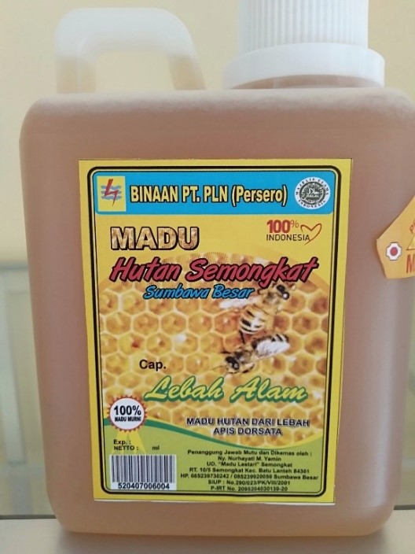
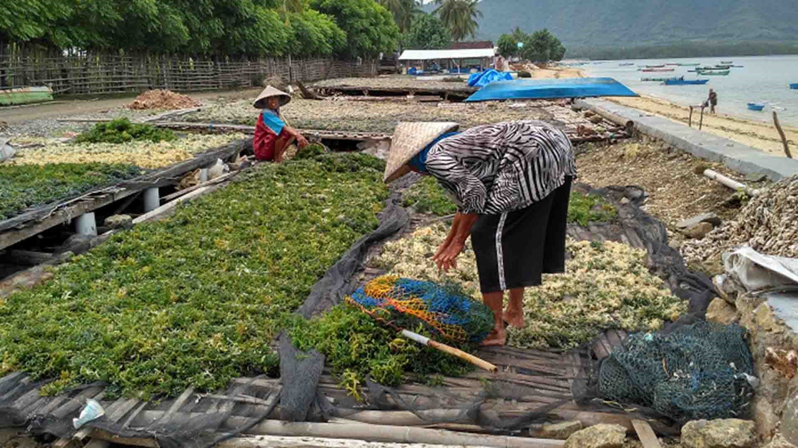
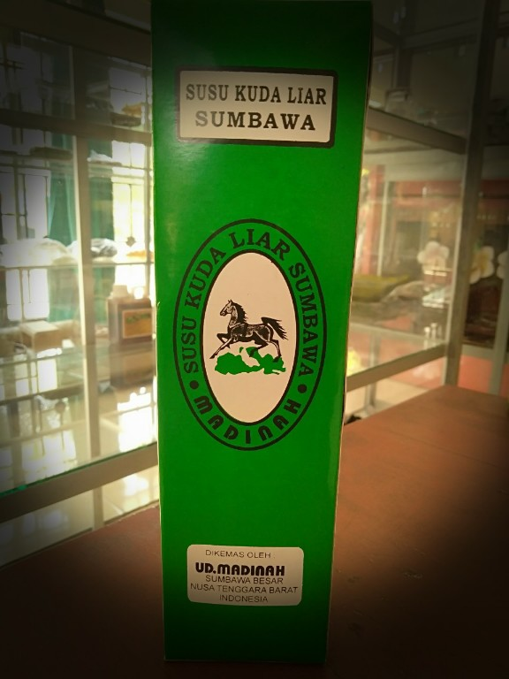
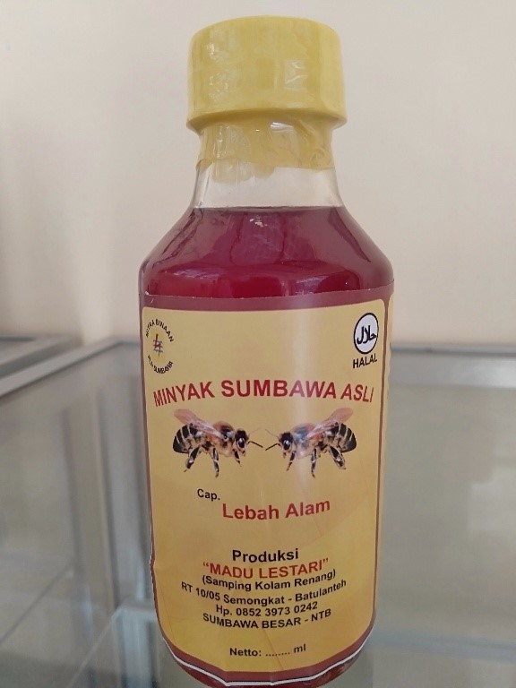
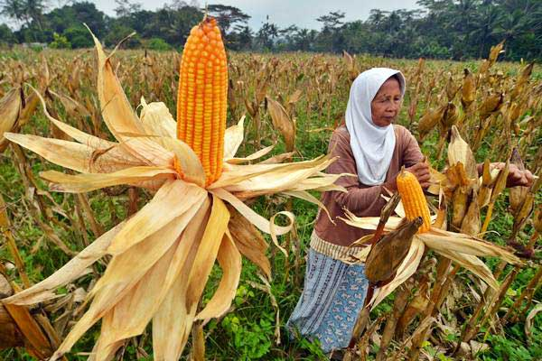
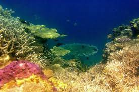
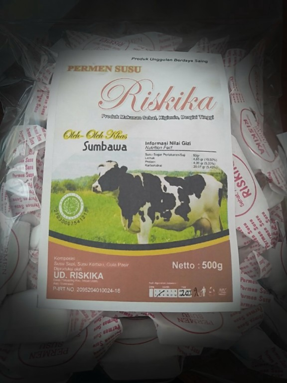

1. Madu lebah khas sumbawa

Madu lebah di Sumbawa sebagian besar dihasilkan oleh jenis lebah dari Apis dorsata atau oleh banyak kalangan perlebahan dikategorikan sebagai madu raksasa karena ukurannya lebih besar dari jenis lebah madu lainnya.
Jenis Apis dorsata ini merupakan jenis lebah hutan yang hingga saat ini di kalangan masyarakat Sumbawa belum dapat dibudidayakan baik dengan cara tertutup maupun dengan cara terbuka.
Keunggulan lain dari madu Sumbawa adalah lebah tersebut bukan lebah ternakan, melainkan langsung mengambil dari hutan.Sehingga ketersediannya cukup terbatas.
Kadar airnya pun lebih rendah dari madu yang dihasilkan pada daerah lain. Madu Sumbawa asli bebas dari pewarna, pengawet, dan pemanis. Berbicara khasiat, madu ini memiliki banyak sekali manfaat untuk kesehatan dan kecantikan.
Selain itu terdapat pula jenis lebah madu yang dapat dibudidayakan yaitu Lebah Trigona. Peternakan lebah madu dengan memanfaatkan beberapa sumber nektar akan menambah nilai tambah buat kualitas lebah madu.
Dengan metode ini akan dihasilkan madu dengan berbagai rasa sesuai sumber nektar yang ada. Proses produksi madu dari Trigona sp., mengikuti peternakan dengan metode khas sumber nektar.
Peternakan dengan metode ini dilakukan dengan pembangunan sarang lebah dengan sistem tertutup dengan sumber nektarnya agar nektar yang diperoleh sesuai dengan rasa yang diinginkan.
Keberadaan madu dengan rasa yang beragam berdasarkan sumber nektarnya akan menambah nilai ekonomis dari madu tersebut.
Keberadaan madu sejuta rasa khas Sumbawa akan menjadi ikon yang potensial serta sumber pendapatan dengan nilai lebih untuk masyarakat Kabupaten Sumbawa.
2. Kopi Punik Sumbawa

Pulau Sumbawa dikenal sebagai salah satu penghasil kopi yang khas di tanah air. Kopi dari Sumbawa yang terbaik, berasal dari Desa Punik, Kecamatan Batu Lanteh, Kabupaten Sumbawa. Itulah mengapa disebut kopi Punik Sumbawa.
Kopi asal Dusun Punik bercita rasa fuity, pahit dan gurih. Kopi Punik tampil dengan berbagai pilihan rasa: sitrus, melon, cokelat atau moka, dan karamel atau gula merah.
Tidak kalah dengan kopi Gayo, Toraja atau Kintamani, kopi Punik ini disebutnya bersih. Cita rasa kopi Punik didapat dari asal tumbuhnya. Ia ditanam di ketinggian 1.200 meter di atas pemukaan laut.
Faktor ketinggian bisa berpengaruh, karena meskipun ditanam di desa yang sama, faktor ketinggian kebun kopi mempengaruhi cita rasa.
Kopi Punik Sumbawa ditanam di atas lahan 2.000 hektar yang meliputi lahan kopi arabika dan lahan kopi robusta pada ketinggian 1.200 di atas permukaan laut (mdpl).
Saban tahun, Dusun Punik di Sumbawa, memproduksi 1.000 ton kopi, yang diperdagangkan ke Lombok, Bali, Jawa, Sulawesi dan Nusa Tenggara Timur hingga mancanegara.
3. Budidaya rumput laut sumbawa


Kabupaten Sumbawa dikenal sebagai daerah ‘lumbung’ rumput laut.
Potensi yang melimpah membuat komoditi tersebut menjadi unggulan dalam meningkatkan perekonomian masyarakat terutama yang tinggal di daerah pesisir.
Melimpahnya komoditi hasil panen petani rumput laut di eksport sampai ke negeri tirai bambu.
4. Susu Kuda Liar

Susu Kuda Liar berasal dari wilayah Sumbawa yang terkenal dengan keawetannya, dipercaya bisa bertahan hingga setahun. Susu Kuda Liar sudah diuji memiliki banyak manfaat terutama untuk meningkatkan stamina dan daya tahan tubuh.
Tidak hanya dijual dalam bentuk susu murni, tetapi ada juga yang mengolah Susu Kuda Liar tersebut menjadi permen. Susu Kuda Liar dianggap memiliki khasiat menjaga stamina dan kondisi tubuh itu, sudah lama dipasarkan ke sejumlah kota.
Permintaan yang tinggi pun membuat masyarakat memanfaatkannya seoptimal mungkin.
Susu Kuda Liar yang digunakan untuk pengobatan memang harus melewati proses fermentasi secara alami terlebih dahulu. Susu Kuda Liar mungkin kurang familiar dibandingkan dengan susu sapi. Namun, Susu Kuda Liar ini punya sejumlah keunikan dan keunggulan.
Kualitas protein Susu Kuda Liar juga lebih baik dibandingkan dengan susu sapi karena memiliki jenis asam amino yang lebih lengkap.
5. Minyak khas Sumbawa

Minyak Sumbawa biasanya digunakan untuk terapi pijat oleh masyarakat sekitar. Minyak Sumbawa ampuh untuk mengatasi rematik, keseleo, perut kembung, mengobati luka bakar, patah tulang sampai keperjakaan pria dan masih banyak lagi.
Minyak Sumbawa yang kaya akan khasiat ini menjadi alternatif masyarakat untuk hidup sehat dengan memanfaatkan kekayaan alam yang melimpah.
Proses pembuatan minyak Sumbawa sangatlah unik dan sakral dengan menjaga warisan adat istiadat nenek moyang. Masyarakat Sumbawa percaya semakin sakral proses pembuatan minyak Sumbawa maka semakin bagus minyak Sumbawa yang dihasilkan.
Minyak Sumbawa dibuat dengan 9 jenis kulit akar kayu yang diambil langsung dari hutan. Tak lupa, masyarakat Sumbawa juga memiliki kebiasaan untuk selalu menjaga dan melestarikan lingkungan dengan mengobati kembali akar kayu yang telah diambil.
Akar kayu yang diambil antara lain, akar kayu kunyit, akar kayu jahe dan akar kayu kesaming. Sesudah dikumpulkan, akar kayu kemudian ditumbuk atau diserut hingga berbentuk serbuk.Selain 9 akar kayu, beberapa bahan lain juga diperlukan dalam pembuatan minyak Sumbawa seperti, santan kelapa dan madu asli Sumbawa.
Konon katanya, bahan untuk membuat minyak Sumbawa berjumlah 144 bahan.
Pembuatan minyak Sumbawa harus dilakukan pada saat bulan Muharram. Semua proses pembuatan harus dilakukan oleh laki-laki, perempuan tidak diperkenankan untuk ikut. Pembuatan minyak Sumbawa dipimpin oleh seorang dukun atau sanro ( dalam bahasa Sumbawa ).
6. Jagung khas sumbawa

Liburan ke Pulau Sumbawa di NTB tak lengkap tanpa mencicipi jagung yang tumbuh di ladang warga. Di Rhee, Kabupaten Sumbawa, terdapat jejeran kios yang menjajakan jagung ketan rebus yang disajikan selagi hangat.
Kecamatan Rhee di Kabupaten Sumbawa menjadi salah satu daerah yang memiliki banyak ladang jagung. Jenis yang banyak ditanam adalah jagung ketan. Masyarakat lokal pun banyak yang menjajakan jagung ketan rebus di tempat yang disebut dengan Simpangan Rhee.
Simpangan Rhee menjadi tempat pemberhentian bagi traveler yang menempuh perjalanan jalur darat dari Sumbawa ke Lombok atau sebaliknya. Ada puluhan kios jagung berjejer di kawasan ini. Di sini, traveler bisa istirahat sejenak sambil mencicipi jagung rebus yang hangat.
7. Budidaya Terumbu Karang Sumbawa

Perairan laut Sumbawa termasuk ke dalam wilayah Lesser Sunda Seascape yang berada pada segitiga karang dunia (The Coral Triangle) yang memiliki biodeversitas laut tertinggi dan habitat bagi 76 % spesies terumbu karang di dunia, dengan kondisi perairan yang tenang serta arus yang relative stabil sehingga memungkinkan untuk berbagai jenis budidaya laut (kerapu, bawal bintang, baronang, mutiara, abalon, ikan hias, rumput laut, kakap). Lebih dari itu, Sumbawa memiliki potensi wisata bahari, pulau-pulau kecil, pengolahan/pemasaran, dan bioteknologi.
8. Sapi Sumbawa

Sapi sumbawa merupakan salah satu rumpun sapi lokal Indonesia yang mempunyai sebaran asli geografis di Provinsi Nusa Tenggara Barat, dan telah ditetapkan melalui Keputusan Menteri Pertanian Nomor 2909/Kpts/OT.140/6/2011 tanggal 17 Juni 2011.
Sapi sumbawa merupakan rumpun sapi lokal yang berkembang di Pulau Sumbawa dengan asal-usul dari sapi hissar yang sejak didatangkan dari India oleh Pemerintah Hindia Belanda sekitar tahun 1908, diternakkan secara murni oleh masyarakat di Pulau Sumbawa secara turun-temurun sampai sekarang.
Sapi sumbawa mempunyai ciri khas yang tidak dimiliki oleh sapi dari bangsa lainnnya dan merupakan sumber daya genetik ternak Indonesia yang perlu dijaga dan dipelihara kelestariannya sehingga dapat memberikan manfaat dalam peningkatan kesejahteraan dan kemakmuran rakyat Indonesia.